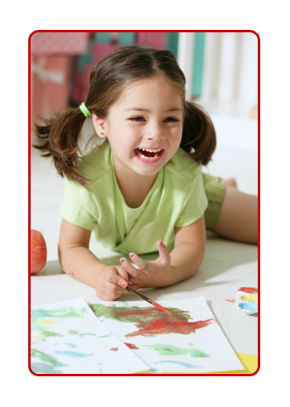

À propos de nous
Pomme d’Api est une pré-maternelle à but non lucratif gérée par les parents. Elle répond aux besoins des familles qui désirent que leurs enfants profitent de la richesse d’un programme d’immersion française ou des familles francophones qui souhaitent que leurs enfants poursuivent les apprentissages dans leur langue maternelle. Accréditée et inspectée par le gouvernement de la Colombie-Britannique, par l’intermédiaire du département de santé de la ville de Vancouver et selon la Loi sur les établissements de soins communautaires (Community Care Facilities Act), la pré-maternelle est entièrement autosuffisante et gérée par un conseil de parents.
Le programme d’immersion en français fut créé en 1983 par un groupe de parents qui a décidé de fonder une pré-maternelle où les enfants de 3 à 5 ans pourraient être initiés à la langue française à travers l’expérience du jeu créatif.
Le programme francophone a été fondé en septembre 1994. Il est conçu pour les enfants francophones et pour les enfants de parent(s) francophone(s). Ce programme inclus le Modèle de francisation distribué par l’Association des parents francophones à seulement 10 pré-maternelles à travers l’ensemble de la province.
